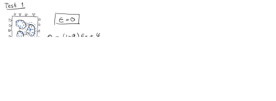
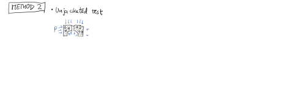
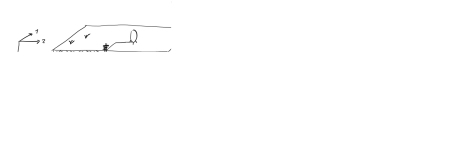
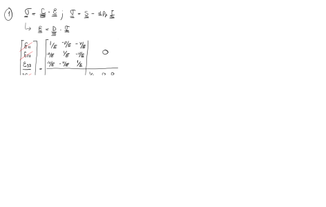

Next: 5. Inelasticity Up: Advanced Geomechanics - Class Notes Previous: 3. Hydro-mechanical coupled processes: Poro-elasticity Contents
This document is a draft. Find hand written notes here: https://github.com/dnicolasespinoza/GeomechanicsJupyter/tree/master/ClassNotes.
Theory thermo-Elasticity:
 |
(4.1) |
Theory thermo-poroelasticity:
 |
(4.2) |
where the coefficient of volumetric thermal expansion for variation in fluid content at constant frame volume is
 |
(4.3) |
where usually . The drained volumetric thermal expansion coefficient is
 (for an ideal porous medium) (for an ideal porous medium) |
(4.4) |
Drained thermoelastic effective stress coefficient ( : Bulk modulus)
: Bulk modulus)
 |
(4.5) |
and the drained specific heat at constant strain divided reference temperature is
 |
(4.6) |
[Exercise to be based on https://doi.org/10.3390/en14165054]
Constitutive equation:
 |
(4.7) |
Assuming uniform cooling leads to no horizontal strains:
 .
.
Furthermore, assuming a compliant caprock, no change of overburden, and small change in pore pressure leads to constant effective vertical stress
 cst.
cst.
Let us use the matrix notation for the normal stresses (shear stresses are zero):
![\begin{displaymath}%compliance matrix
\left[
\begin{array}{c}
\sigma_{11} \\
\...
...
3 \alpha_L K \theta \\
3 \alpha_L K \theta
\end{array}\right]\end{displaymath}](img132.svg) |
(4.8) |
Solving for
 and
 results in:
results in:
 |
(4.9) |
Replacing
 in the first equation leads to
in the first equation leads to
 |
(4.10) |
which expressed in terms of the Young's modulus (
![$K = E/[3(1-2\nu)]$](img138.svg) ) is:
) is:
|  | (4.11) |
Hence, a variation of horizontal stress with temperature is
 |
(4.12) |
Which is in the order of
 |
(4.13) |
for

C,  GPa, and
GPa, and  .
.